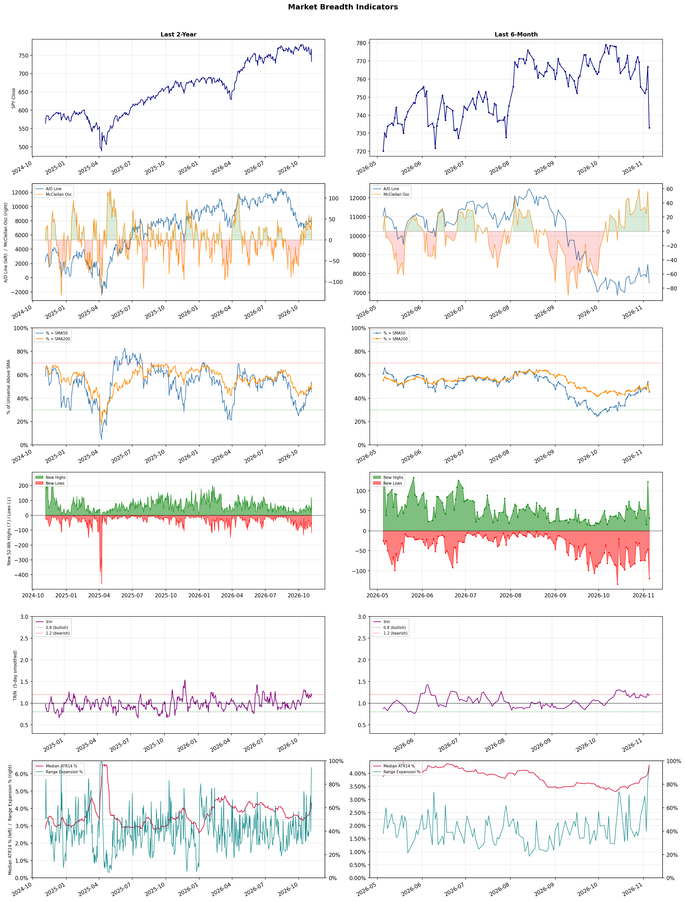

A daily market breadth and sector rotation report for active investors
| Item | Read |
|---|---|
| Regime downgraded | Selective Risk-On → Neutral |
| Regime | Neutral |
| Risk posture | Defensive |
| Universe | 1,313 stocks tracked · 32 new 52-week highs · 30 active swing setups |
| Breadth | only 45.3% of tracked stocks are above SMA50, new lows exceed new highs (119 vs 32) |
| Leadership | Apparel Manufacturing, Health Information Services, and Insurance Brokers |
| Weakest groups | Uranium, Other Industrial Metals & Mining, and Semiconductor Equipment & Materials |
Use this report to prioritize research and chart review; validate entries, stops, liquidity, earnings, and risk before acting.
| Item | Read |
|---|---|
| Primary read | Neutral regime with Defensive risk posture. |
| Research queue | VFC, FIGS, PVH, UA, LEVI |
| Leadership focus | Apparel Manufacturing, Health Information Services, and Insurance Brokers |
| Caution list | Uranium, Other Industrial Metals & Mining, and Semiconductor Equipment & Materials |
| Review prompt | Check extension risk, chart location, fundamentals, valuation, and earnings before using any research row. |
| Item | Read |
|---|---|
| Primary read | 4 active risk warnings; use screen output as watchlist input only. |
| Bullish screens | CERT, ARX, BJ, ASO, COTY |
| Bearish screens | APLD, CIFR, PSEC, BRUN, CORZ |
| Alerts / levels | Automated trigger, stop, ATR, liquidity, reward/risk, and event-risk levels are pending future enrichment. |
| Review prompt | Open the linked chart, define trigger and invalidation, then check liquidity and event risk independently. |
Risk Posture: Defensive — screen backdrop favors caution; require independent risk review before new exposure
Metric context: McClellan below -50 = elevated selling pressure; below -100 = washout territory. Range Expansion = share of stocks with daily range above their 20-day average. Signal Density = share of tracked names appearing in signal screens.
| Breadth Date | % > SMA50 | % > SMA200 | New Highs | New Lows | McClellan | Median Range | Avg Range | Median ATR14 | Range Expansion | Signal Density |
|---|---|---|---|---|---|---|---|---|---|---|
| 2026-11-05 | 45.3% | 45.8% | 32 | 119 | 0.9 | 6.7% | 8.0% | 4.3% | 94.3% | 2.0% |

Regime downgraded: Selective Risk-On → Neutral
Prior comparison date: November 4, 2026
| Metric | Prior | Current | Change |
|---|---|---|---|
| Regime | Selective Risk-On | Neutral | changed |
| Risk Posture | Selective | Defensive | changed |
| % > SMA50 | 53.8% | 45.3% | -8.5 pts |
| % > SMA200 | 51.9% | 45.8% | -6.2 pts |
| New Highs | 122 | 32 | -90 |
| New Lows | 46 | 119 | -73 |
Top-10 industries entering: Advertising Agencies, Beverages - Non-Alcoholic, and Footwear & Accessories. Top-10 industries leaving: Apparel Retail, REIT - Hotel & Motel, and Restaurants. New multi-signal long setups: AMH, ARX, ASO, BDX, BJ, CCEP, CERT. New multi-signal short setups: APLD, AVTX, BRUN.
| Status | Tickers | Read |
|---|---|---|
| Added | AMH, APLD, ARX, ASO, AVTX, BDX, BJ, BRUN | New technical screen matches vs prior report. |
| Removed | ADTN, AESI, AHR, AMC, ARQT, CCJ, CROX, DIS | No longer present in today's technical screen matches. |
| Still Active | EW, FRMI, IBN | Appeared in both current and prior reports. |
| Promoted | none | Model Screen Score improved by at least 15 points. |
| Downgraded | none | Model Screen Score declined by at least 15 points. |
| Direction | Industry | ETF | Prior Rank | Current Rank | Days | Rank Change |
|---|---|---|---|---|---|---|
| Rose | Restaurants | N/A | 83 | 12 | 42 | +71 |
| Rose | Leisure | N/A | 84 | 19 | 42 | +65 |
| Rose | Apparel Manufacturing | N/A | 64 | 1 | 42 | +63 |
| Rose | REIT - Retail | N/A | 77 | 20 | 28 | +57 |
| Rose | Footwear & Accessories | N/A | 61 | 7 | 42 | +54 |
Bull: The rising relative strength of the restaurant industry can be attributed to a combination of resilient consumer spending and the potential for strong earnings in the upcoming quarter, as highlighted by the anticipation surrounding companies like Shake Shack (SHAK) and Papa John's (PZZA) potentially beating Q3 estimates. Despite recent headlines indicating some challenges, such as soft August dining traffic, the overall outlook remains positive, with analysts identifying opportunities within the sector, as seen in reports from Yahoo Finance and The Motley Fool, which suggest that select restaurant stocks and ETFs are well-positioned for growth heading into 2026.
Bear: While the rising relative strength of the restaurant industry may suggest resilience, the soft August dining traffic signals a potential downturn in consumer spending, which could undermine earnings expectations for Q3. Additionally, with inflationary pressures and rising operating costs, many restaurants may struggle to maintain margins, making it difficult for stocks like Shake Shack and Papa John's to outperform despite optimistic forecasts. The overall outlook may be overly optimistic, as the sector faces significant headwinds that could dampen growth prospects in the near term.
Verdict: The restaurant industry's rising relative strength is primarily driven by resilient consumer spending and the expectation of strong earnings in the upcoming quarter, particularly for companies like Shake Shack and Papa John's. However, the key risk lies in soft August dining traffic and ongoing inflationary pressures, which could hinder consumer spending and squeeze profit margins, potentially undermining the optimistic outlook for the sector. Investors should closely monitor consumer behavior and cost trends to gauge the sustainability of this growth.
Sources: Google News
Bull: The Leisure industry is experiencing a rise in relative strength primarily due to a robust recovery in travel and tourism, as highlighted by multiple sources emphasizing growth opportunities despite broader industry pressures. Factors such as increasing consumer demand for travel, as noted in the articles from The Motley Fool and Yahoo Finance, coupled with strategic investments in technology and AI to enhance customer experiences, are driving this positive momentum. Additionally, the focus on specific stocks within the sector that are positioned to capitalize on these trends suggests a growing investor confidence in the long-term potential of leisure and recreation services.
Bear: While the leisure industry may currently exhibit rising relative strength, this could be misleading given the broader economic headwinds, such as inflationary pressures and potential recession fears, which may dampen consumer spending on discretionary items like travel and leisure. Furthermore, the emphasis on AI and technology investments may not yield immediate benefits, as companies grapple with integration challenges and increased operational costs, potentially overshadowing the short-term gains highlighted by bullish analysts. Thus, the optimism surrounding the sector may be overly optimistic and not fully account for these significant risks.
Verdict: The leisure industry's rise is fundamentally driven by a strong rebound in travel and tourism, fueled by increasing consumer demand and strategic technological investments aimed at enhancing customer experiences. However, a key risk lies in the potential impact of inflationary pressures and recession fears, which could constrain consumer spending on discretionary leisure activities, suggesting that investors should remain cautious and monitor economic indicators closely.
Sources: Google News
Bull: The Apparel Manufacturing sector is likely experiencing rising relative strength due to a combination of increasing global demand for apparel and strategic expansions by leading companies, as highlighted by Gildan Activewear's potential international manufacturing network expansion. Additionally, the positive outlook from investment analysts, as seen in articles from The Motley Fool and Forbes, indicates confidence in the sector's growth potential, particularly as the industry adapts to challenges like tariffs and geopolitical tensions, which may ultimately lead to a more resilient supply chain and increased export opportunities.
Bear: While the apparel manufacturing sector may currently show rising relative strength, this trend could be misleading due to underlying vulnerabilities, such as the significant risks posed by tariffs and geopolitical tensions, particularly regarding India's garment export goals. Additionally, the potential expansion of companies like Gildan Activewear into international markets may not yield the expected benefits, as increased competition and rising production costs could erode margins. Furthermore, the optimistic outlook from analysts may overlook the cyclical nature of consumer spending, which could dampen demand in the face of economic uncertainty.
Verdict: The apparel manufacturing sector is likely experiencing rising relative strength due to robust global demand and strategic expansions by key players like Gildan Activewear, which are positioning themselves to capitalize on new market opportunities. However, investors should remain cautious of the significant risks posed by tariffs and geopolitical tensions, particularly as these factors could disrupt supply chains and dampen margins, potentially leading to a downturn in consumer spending amid economic uncertainty.
Sources: Google News
Bull: The recent rise in relative strength for the Retail REIT sector can be attributed to strong leasing momentum and resilient consumer demand, as highlighted by reports from Morningstar and Seeking Alpha regarding the performance of companies like Kite Realty Group Trust. Additionally, the limited supply of retail space, coupled with a favorable economic environment for retail spending, positions these REITs to capitalize on increased occupancy rates and rental income, as noted in multiple Yahoo Finance articles discussing the sector's growth potential.
Bear: While the recent rise in relative strength for Retail REITs may appear promising, it is essential to consider the broader economic landscape, including potential headwinds such as rising interest rates and inflation, which could dampen consumer spending and affect occupancy rates. Additionally, the retail sector continues to face significant structural challenges from e-commerce competition and changing consumer preferences, which may undermine the long-term viability of physical retail spaces, regardless of current leasing momentum. This suggests that the recent positive sentiment may be overly optimistic and not reflective of sustainable growth.
Verdict: The recent rise in the Retail REIT sector is fundamentally driven by strong leasing momentum and resilient consumer demand, supported by limited retail space supply and a favorable economic environment for spending. However, investors should remain cautious of key risks, particularly rising interest rates and inflation, which could negatively impact consumer spending and occupancy rates, potentially undermining the sector's long-term growth prospects.
Sources: Google News
Bull: The Footwear & Accessories industry is experiencing rising relative strength due to increasing consumer demand for sustainable practices, as highlighted by the new EU regulations aimed at preventing the destruction of unsold clothes and shoes. This shift not only aligns with growing consumer preferences for environmentally responsible brands but also positions companies within the sector to innovate and capitalize on sustainability trends, as indicated by the positive outlook from investment analyses like "5 Best Shoe Stocks for 2026" and "8 Best Apparel And Textile Stocks." Additionally, the overall stock performance in the sector suggests a robust recovery and investor confidence in the industry's growth potential.
Bear: While the rising relative strength and consumer demand for sustainability are noteworthy, the new EU regulations could impose significant operational challenges and increased costs for footwear companies, particularly those reliant on fast fashion models. Additionally, the industry's current stock performance may be misleading, as it could be driven by speculative trading rather than fundamental growth, especially in a macroeconomic environment characterized by rising interest rates and potential consumer spending pullbacks. This raises concerns about the long-term viability of the sector amid shifting regulatory landscapes and economic pressures.
Verdict: The Footwear & Accessories industry is likely experiencing a rise in relative strength due to a strong consumer shift towards sustainable practices, spurred by new EU regulations that encourage environmentally responsible production. However, the key risk lies in the potential operational challenges and increased costs these regulations may impose, particularly on fast fashion brands, which could hinder long-term growth if consumer spending declines amid rising interest rates. Investors should closely monitor regulatory impacts and macroeconomic conditions while considering opportunities in sustainable brands.
Sources: Google News
| Direction | Industry | ETF | Prior Rank | Current Rank | Days | Rank Change |
|---|---|---|---|---|---|---|
| Fell | Semiconductor Equipment & Materials | SOXX | 3 | 85 | 35 | -82 |
| Fell | Computer Hardware | XLK | 4 | 82 | 35 | -78 |
| Fell | Electronic Components | XLK | 7 | 83 | 35 | -76 |
| Fell | Semiconductors | SOXX | 6 | 80 | 35 | -74 |
| Fell | Steel | SLX | 6 | 72 | 42 | -66 |
Bear: While the bull analyst attributes the sector's decline to profit-taking and temporary uncertainty, a more fundamental concern lies in the cyclical nature of the semiconductor industry, which is facing increasing competition and potential oversupply as new manufacturing capacities come online. Additionally, the shift towards AI semiconductor stocks may indicate a broader market reallocation away from traditional semiconductor equipment firms, suggesting that the sector could struggle to regain momentum as investors prioritize growth in more innovative and high-demand areas. This fundamental shift, combined with a declining relative-strength trend, raises significant concerns about the long-term viability of current valuations in the Semiconductor Equipment & Materials sector.
Bull: The Semiconductor Equipment & Materials sector is experiencing a decline in relative strength primarily due to profit-taking after a strong performance in the previous year, as indicated by reports of significant stock drops for major players like Applied Materials, Lam Research, and KLA. Additionally, uncertainty surrounding the chip equipment outlook, as highlighted in the headlines, is causing investor caution, which is further exacerbated by a shift in focus towards AI semiconductor stocks that are perceived to have better growth potential. This combination of profit-taking and market skepticism is contributing to the sector's relative weakness.
Verdict: The Semiconductor Equipment & Materials sector's decline is fundamentally driven by cyclical pressures and increasing competition, with new manufacturing capacities potentially leading to oversupply. Investors are reallocating towards AI semiconductor stocks, signaling a shift away from traditional firms, which poses a significant risk to the long-term valuations of the sector. To navigate this environment, investors should closely monitor capacity expansions and competitive dynamics while considering a diversified approach that includes emerging technologies in AI.
Sources: Google News
Bear: While the bull analyst highlights a shift in sentiment as a key factor, it's crucial to recognize that the broader economic environment is also impacting the Computer Hardware sector. Rising interest rates and inflationary pressures are likely dampening capital expenditures in technology, leading to reduced demand for hardware across the board, not just AI-related stocks. Additionally, the ongoing supply chain challenges and geopolitical tensions could exacerbate the sector's struggles, suggesting that the relative weakness may be more systemic than merely a reaction to investor sentiment.
Bull: The relative weakness in the Computer Hardware sector can be attributed to a shift in investor sentiment away from AI hardware stocks, as highlighted by Business Insider's report on a CIO recommending divestment from this segment. Additionally, the trend of hedge funds selling off chip stocks, as noted by Reuters, reflects concerns about overvaluation and market saturation in AI-related technologies. This pivot towards alternative sectors, as suggested in various articles, indicates a broader market reassessment of growth prospects within the Computer Hardware industry.
Verdict: The Computer Hardware sector's decline is primarily driven by a combination of shifting investor sentiment away from AI hardware stocks and broader economic factors such as rising interest rates and inflation, which are constraining capital expenditures in technology. The key risk from the bear case is that ongoing supply chain challenges and geopolitical tensions could further exacerbate demand issues, indicating that the sector's struggles may be rooted in systemic problems rather than just a reaction to market sentiment. Investors should closely monitor economic indicators and geopolitical developments to assess potential impacts on hardware demand.
Sources: Google News
Bear: While the bull analyst attributes the sector's relative weakness to macroeconomic pressures and shifting investor sentiment, it is crucial to recognize that the electronic components industry is facing fundamental challenges beyond these external factors. The increasing commoditization of electronic components, coupled with heightened competition and pricing pressures, could undermine profitability across the sector, regardless of short-term earnings performances from individual companies like Amphenol. Additionally, the focus on emerging technologies such as robotics and memory stocks may divert investment away from traditional electronic components, leading to a prolonged period of stagnation or decline in this segment.
Bull: The relative weakness in the Electronic Components sector can largely be attributed to macroeconomic pressures and shifting investor sentiment towards more dynamic technology segments, as highlighted by the focus on robotics and memory stocks in recent headlines. Additionally, while companies like Amphenol are performing well, the overall market sentiment may be influenced by broader concerns about supply chain disruptions and inflationary pressures, which could be affecting earnings across the sector, as seen in the mixed Q1 earnings results from firms like Corning.
Verdict: The decline in the electronic components sector is primarily driven by fundamental challenges, including increasing commoditization and intense competition, which are pressuring profit margins and market positioning. While macroeconomic factors like inflation and supply chain disruptions play a role, the bear case highlights a critical risk: if investment continues to shift towards emerging technologies, traditional electronic components may experience prolonged stagnation, necessitating strategic adjustments from companies to maintain relevance and profitability. Investors should closely monitor competitive dynamics and consider diversifying into sectors with stronger growth prospects.
Sources: Google News
Bear: While the bull analyst highlights potential long-term demand for technology and innovation, the current decline in the semiconductor sector's relative strength signals deeper, systemic issues that may not be easily resolved. The significant drops in key stocks like Qualcomm, Micron, Sandisk, and AMD suggest that investor confidence is waning, and macroeconomic challenges such as rising interest rates and persistent supply chain disruptions could further exacerbate demand weakness. Furthermore, the frequent calls for "buying opportunities" amid a sell-off may indicate a desperate search for value rather than genuine confidence in a sector poised for recovery.
Bull: The recent decline in the semiconductor sector's relative strength can be attributed to a combination of broader market sell-offs and specific company challenges, as highlighted by the significant drops in stocks like Qualcomm, Micron, Sandisk, and AMD. This trend is compounded by macroeconomic factors such as rising interest rates and supply chain disruptions, which have led to reduced demand forecasts and increased caution among investors, as indicated by the multiple headlines discussing the sell-off and the need to identify strong buying opportunities in the sector. However, the mention of "best semiconductor stocks" for future growth suggests that despite current challenges, there is optimism about a rebound driven by long-term demand for technology and innovation in the sector.
Verdict: The semiconductor industry's recent decline can be fundamentally attributed to a confluence of rising interest rates and ongoing supply chain disruptions, which have dampened demand forecasts and eroded investor confidence. Key risks highlighted by the bear thesis include the potential for systemic issues within the sector that may hinder recovery, suggesting that investors should exercise caution and closely monitor macroeconomic indicators before making new investments.
Sources: Google News
Bear: While the bull analyst acknowledges the challenges facing the steel industry, it's crucial to emphasize that the falling relative strength trend indicates a deeper and more systemic issue, potentially signaling a prolonged downturn rather than a temporary setback. The focus on specific stocks like Nucor and Steel Dynamics may create an illusion of opportunity, but it overlooks the broader pressures of overcapacity, rising energy costs, and potential regulatory changes that could further dampen profitability across the sector. Additionally, the rebound in Vietnam's steel sector may not translate to global recovery, as it could be driven by localized factors that do not address the fundamental issues plaguing the industry as a whole.
Bull: The steel industry is currently facing challenges that have led to its falling relative strength compared to other sectors, primarily due to macroeconomic factors such as fluctuating demand and rising production costs. Recent headlines highlight a focus on the best mining and steel stocks for 2026, indicating investor caution amid uncertainty, while reports of a rebound in Vietnam's steel sector suggest regional disparities that may not yet reflect broader market recovery. Additionally, the emphasis on specific steel producers like Nucor and Steel Dynamics suggests that while there are opportunities, the overall industry may still be grappling with headwinds that affect investor sentiment.
Verdict: The steel industry's falling relative strength is primarily driven by macroeconomic challenges, including fluctuating demand and rising production costs, which have created an environment of overcapacity and reduced profitability. The key risk highlighted by the bear case is that localized rebounds, such as in Vietnam's steel sector, may not indicate a broader recovery, suggesting that investors should remain cautious and consider the potential for a prolonged downturn across the industry. Therefore, while selective opportunities may exist in specific stocks, a comprehensive assessment of the sector's structural issues is essential before making investment decisions.
Sources: Google News
| Industry | Rank | ETF | 7d | 14d | 28d | 42d | Chg 42d | Size | 20D | 60D | Composite | Active Setups |
|---|---|---|---|---|---|---|---|---|---|---|---|---|
| Apparel Manufacturing | 1 | N/A | 5 | 11 | 26 | 64 | +63 | 6 | 22.5% | 16.9% | 0.961 | 0 |
| Health Information Services | 2 | N/A | 1 | 9 | 2 | 3 | +1 | 12 | 13.5% | 30.9% | 0.959 | 0 |
| Insurance Brokers | 3 | N/A | 12 | 6 | 27 | 42 | +39 | 6 | 14.0% | 12.7% | 0.924 | 0 |
| Discount Stores | 4 | XRT | 10 | 3 | 5 | 21 | +17 | 7 | 11.0% | 12.5% | 0.921 | 0 |
| Specialty Retail | 5 | XRT | 11 | 12 | 25 | 24 | +19 | 13 | 17.4% | 11.5% | 0.919 | 0 |
| Household & Personal Products | 6 | XLP | 9 | 2 | 9 | 26 | +20 | 11 | 12.7% | 15.8% | 0.910 | 0 |
| Footwear & Accessories | 7 | N/A | 22 | 40 | 35 | 61 | +54 | 5 | 14.7% | 6.8% | 0.878 | 0 |
| Beverages - Non-Alcoholic | 8 | XLP | 24 | 20 | 30 | 60 | +52 | 7 | 12.2% | 8.0% | 0.869 | 0 |
| Medical Care Facilities | 9 | IHF | 4 | 13 | 24 | 25 | +16 | 9 | 12.0% | 13.6% | 0.857 | 0 |
| Advertising Agencies | 10 | N/A | 48 | 41 | 41 | 20 | +10 | 7 | 12.5% | 4.2% | 0.857 | 0 |
Rank columns (7d–42d) show the industry's rank that many trading days ago — lower is stronger. Chg 42d = rank change vs 42 trading days ago — positive means the industry moved up. 20D and 60D are the mean stock return within the industry over that period. Active Setups: count of today's swing-trade candidates from this industry appearing across all signal screens.
| Industry | Rank | ETF | 7d | 14d | 28d | 42d | Chg 42d | Size | 20D | 60D | Composite | Active Setups |
|---|---|---|---|---|---|---|---|---|---|---|---|---|
| Uranium | 87 | URA | 87 | 87 | 87 | 78 | -9 | 6 | -22.8% | -39.9% | 0.033 | 0 |
| Other Industrial Metals & Mining | 86 | N/A | 86 | 85 | 82 | 63 | -23 | 21 | -25.2% | -38.6% | 0.036 | 0 |
| Semiconductor Equipment & Materials | 85 | SOXX | 75 | 75 | 14 | 14 | -71 | 17 | -35.4% | -40.2% | 0.054 | 0 |
| Electrical Equipment & Parts | 84 | XLI | 85 | 86 | 72 | 40 | -44 | 12 | -25.2% | -41.4% | 0.057 | 0 |
| Electronic Components | 83 | XLK | 73 | 80 | 20 | 9 | -74 | 10 | -29.0% | -34.5% | 0.070 | 0 |
| Computer Hardware | 82 | XLK | 68 | 58 | 15 | 5 | -77 | 15 | -33.2% | -36.0% | 0.082 | 0 |
| Communication Equipment | 81 | IYZ | 61 | 71 | 22 | 31 | -50 | 15 | -29.4% | -34.4% | 0.092 | 0 |
| Semiconductors | 80 | SOXX | 62 | 64 | 10 | 10 | -70 | 37 | -31.6% | -31.8% | 0.095 | 0 |
| Oil & Gas Equipment & Services | 79 | XES | 55 | 66 | 68 | 30 | -49 | 17 | -20.0% | -25.5% | 0.106 | 0 |
| Auto Parts | 78 | N/A | 84 | 72 | 67 | 48 | -30 | 19 | -15.3% | -25.0% | 0.131 | 1 |
Rank columns (7d–42d) show the industry's rank that many trading days ago — lower is stronger. Chg 42d = rank change vs 42 trading days ago — positive means the industry moved up. 20D and 60D are the mean stock return within the industry over that period. Active Setups: count of today's swing-trade candidates from this industry appearing across all signal screens.
These are research candidates from top-ranked stocks, capped at five names per industry to avoid over-concentration. Returns shown (60D, 120D, 250D) are historical — they reflect where prices have already moved, not forward expectations. Extension Risk flags names that may require extra patience or a better entry point. They are not buy signals.
Chart: TV = TradingView chart (opens in browser); PDF = local chart file (if downloaded).
| Ticker | Name | Industry | Industry Rank | Market Cap | 60D Hist | 120D Hist | 250D Hist | Extension Risk | Research Reason | Chart |
|---|---|---|---|---|---|---|---|---|---|---|
| VFC | VF Corp | Apparel Manufacturing | 1 | N/A | 40.4% | 23.3% | 45.7% | Constructive | Top-ranked in industry | TV |
| FIGS | FIGS Inc | Apparel Manufacturing | 1 | N/A | 40.2% | 71.7% | 168.7% | Constructive | Top-ranked in industry | TV |
| PVH | PVH Corp | Apparel Manufacturing | 1 | N/A | 13.2% | 16.3% | 21.7% | Constructive | Top-ranked in industry | TV |
| UA | Under Armour-C | Apparel Manufacturing | 1 | N/A | 4.7% | 7.4% | 23.5% | Constructive | Top-ranked in industry | TV |
| LEVI | Levi Strauss & Co. | Apparel Manufacturing | 1 | N/A | 3.7% | 11.7% | 18.6% | Constructive | Top-ranked in industry | TV |
| HTFL | Heartflow | Health Information Services | 2 | N/A | 74.0% | 83.5% | 50.6% | Extended | Top-ranked in industry; extended | TV |
| CERT | Certara | Health Information Services | 2 | N/A | 52.1% | 171.9% | 8.1% | Extended | Top-ranked in industry; extended | TV |
| TDOC | Teladoc Health | Health Information Services | 2 | N/A | 40.2% | 48.0% | 23.5% | Constructive | Top-ranked in industry | TV |
| HNGE | Hinge Health | Health Information Services | 2 | N/A | 34.4% | 112.8% | 163.4% | Extended | Top-ranked in industry; extended | TV |
| DOCS | Doximity | Health Information Services | 2 | N/A | 32.8% | 74.9% | -47.0% | Constructive | Top-ranked in industry | TV |
| ARX | Accelerant Holdings | Insurance Brokers | 3 | N/A | 46.1% | 28.8% | 65.0% | Constructive | Top-ranked in industry | TV |
| AJG | Arthur J. Gallagher | Insurance Brokers | 3 | N/A | 13.1% | 45.0% | 18.9% | Constructive | Top-ranked in industry | TV |
| MRSH | Marsh | Insurance Brokers | 3 | N/A | 10.9% | 30.8% | 20.5% | Constructive | Top-ranked in industry | TV |
| BRO | Brown & Brown | Insurance Brokers | 3 | N/A | 4.9% | 32.8% | -1.7% | Constructive | Top-ranked in industry | TV |
| AON | Aon PLC | Insurance Brokers | 3 | N/A | -2.0% | 9.1% | 2.1% | Lagging | Top-ranked in industry; lagging | TV |
| BJ | BJ's Wholesale Club Holdings | Discount Stores | 4 | N/A | 20.0% | 15.5% | 25.2% | Constructive | Top-ranked in industry | TV |
| DG | Dollar General | Discount Stores | 4 | N/A | 16.0% | 36.2% | 46.6% | Constructive | Top-ranked in industry | TV |
| COST | Costco | Discount Stores | 4 | N/A | 12.4% | 1.9% | 16.1% | Constructive | Top-ranked in industry | TV |
| WMT | Walmart | Discount Stores | 4 | N/A | 10.4% | -2.6% | 26.7% | Constructive | Top-ranked in industry | TV |
| DLTR | Dollar Tree | Discount Stores | 4 | N/A | 7.3% | 54.0% | 35.3% | Constructive | Top-ranked in industry | TV |
These are technical screen matches from existing signal files. They are not trade recommendations. Trigger, stop, ATR, liquidity, reward/risk, and event risk still require separate validation until those inputs are available.
Model Screen Score is weighted by signal count, industry rank, freshness, and setup type. It is not a probability of profit, expected return, or suitability rating. Industry cap: max 3 candidates per industry.
Signal glossary: Momentum Pullback = stock in an uptrend that has pulled back 10–30% and shows re-entry conditions. MA Compression = short- and long-term moving averages converging, often preceding a directional move. Three-Day Up/Down = three consecutive closes in the same direction. New 52Wk High/Low = price reached a new annual extreme.
Chart: TV = TradingView chart (opens in browser); PDF = local chart file (if downloaded).
| Ticker | Industry | Setups | Close | Industry Rank | Signal Count | Model Screen Score | Reason | Chart |
|---|---|---|---|---|---|---|---|---|
| IBN | Banks - Regional | MA Compression; New 52Wk High; Three-Day Up | 32.53 | 51 | 3 | 85 | Multi-signal; new-high strength | TV |
| CERT | Health Information Services | New 52Wk High; Three-Day Up | 12.18 | 2 | 2 | 100 | Multi-signal; top industry breakout | TV |
| ARX | Insurance Brokers | New 52Wk High; Three-Day Up | 19.88 | 3 | 2 | 100 | Multi-signal; top industry breakout | TV |
| BJ | Discount Stores | New 52Wk High; Three-Day Up | 111.26 | 4 | 2 | 93 | Multi-signal; top industry breakout | TV |
| ASO | Specialty Retail | New 52Wk High; Three-Day Up | 67.81 | 5 | 2 | 93 | Multi-signal; top industry breakout | TV |
| COTY | Household & Personal Products | New 52Wk High; Three-Day Up | 3.91 | 6 | 2 | 93 | Multi-signal; top industry breakout | TV |
| CCEP | Beverages - Non-Alcoholic | New 52Wk High; Three-Day Up | 117.29 | 8 | 2 | 85 | Multi-signal; top industry breakout | TV |
| KDP | Beverages - Non-Alcoholic | New 52Wk High; Three-Day Up | 36.89 | 8 | 2 | 85 | Multi-signal; top industry breakout | TV |
| EVRG | Utilities - Regulated Electric | MA Compression; New 52Wk High | 87.41 | 23 | 2 | 82 | Multi-signal; new-high strength | TV |
| QSR | Restaurants | MA Compression; Three-Day Up | 78.55 | 12 | 2 | 80 | Multi-signal; compression setup | TV |
| BDX | Medical Instruments & Supplies | New 52Wk High; Three-Day Up | 213.55 | 16 | 2 | 77 | Multi-signal; new-high strength | TV |
| WRB | Insurance - Property & Casualty | New 52Wk High; Three-Day Up | 76.98 | 18 | 2 | 77 | Multi-signal; new-high strength | TV |
| LTH | Leisure | New 52Wk High; Three-Day Up | 47.75 | 19 | 2 | 77 | Multi-signal; new-high strength | TV |
| CRON | Drug Manufacturers - Specialty & Generic | New 52Wk High; Three-Day Up | 3.72 | 22 | 2 | 77 | Multi-signal; new-high strength | TV |
| ED | Utilities - Regulated Electric | New 52Wk High; Three-Day Up | 121.44 | 23 | 2 | 77 | Multi-signal; new-high strength | TV |
| EW | Medical Devices | New 52Wk High; Three-Day Up | 100.82 | 25 | 2 | 77 | Multi-signal; new-high strength | TV |
| ORI | Insurance - Property & Casualty | MA Compression; Three-Day Up | 40.39 | 18 | 2 | 72 | Multi-signal; compression setup | TV |
| ES | Utilities - Regulated Electric | MA Compression; Three-Day Up | 71.92 | 23 | 2 | 72 | Multi-signal; compression setup | TV |
| AMH | REIT - Residential | MA Compression; Three-Day Up | 33.09 | 26 | 2 | 65 | Multi-signal; compression setup | TV |
| ELS | REIT - Residential | MA Compression; Three-Day Up | 62.98 | 26 | 2 | 65 | Multi-signal; compression setup | TV |
| EXLS | Information Technology Services | New 52Wk High; Three-Day Up | 43.61 | 41 | 2 | 65 | Multi-signal; new-high strength | TV |
| HMC | Auto Manufacturers | New 52Wk High; Three-Day Up | 36.26 | 62 | 2 | 55 | Multi-signal; new-high strength | TV |
Bearish setups — stocks making new lows or showing persistent downside patterns. Validate carefully before acting.
| Ticker | Industry | Setups | Close | Industry Rank | Signal Count | Model Screen Score | Reason | Chart |
|---|---|---|---|---|---|---|---|---|
| APLD | Information Technology Services | New 52Wk Low; Three-Day Down | 14.17 | 41 | 2 | 35 | Multi-signal; new-low weakness | TV |
| CIFR | Information Technology Services | New 52Wk Low; Three-Day Down | 5.55 | 41 | 2 | 35 | Multi-signal; new-low weakness | TV |
| PSEC | Asset Management | New 52Wk Low; Three-Day Down | 1.38 | 48 | 2 | 35 | Multi-signal; new-low weakness | TV |
| BRUN | Software - Infrastructure | New 52Wk Low; Three-Day Down | 5.56 | 57 | 2 | 35 | Multi-signal; new-low weakness | TV |
| CORZ | Software - Infrastructure | New 52Wk Low; Three-Day Down | 11.38 | 57 | 2 | 35 | Multi-signal; new-low weakness | TV |
| CRWV | Software - Infrastructure | New 52Wk Low; Three-Day Down | 43.66 | 57 | 2 | 35 | Multi-signal; new-low weakness | TV |
| FRMI | REIT - Specialty | New 52Wk Low; Three-Day Down | 1.53 | 59 | 2 | 35 | Multi-signal; new-low weakness | TV |
| AVTX | Biotechnology | New 52Wk Low; Three-Day Down | 6.63 | 61 | 2 | 25 | Multi-signal; new-low weakness | TV |
How To Use This Report
| Use | Purpose |
|---|---|
| Market map | Start with breadth, regime, risk warnings, and what changed since the prior report. |
| Industry scan | Use leading, deteriorating, rising, and declining industries to focus research. |
| Research queue | Treat long-term candidates as names for deeper fundamental, valuation, and chart review. |
| Technical review | Treat bullish and bearish screen matches as watchlist inputs that require independent trigger, stop, liquidity, and event-risk checks. |
| Source follow-up | Use chart links and source files to verify raw inputs before relying on any row. |
What This Report Is Not
| Not | Meaning |
|---|---|
| Investment advice | The report does not evaluate personal objectives, risk tolerance, tax situation, account type, or suitability. |
| Buy/sell recommendation | Named tickers are research candidates or screen matches, not recommendations to transact. |
| Price target | The report does not provide fair value estimates, targets, or expected returns. |
| Trade plan | Trigger, stop, sizing, reward/risk, liquidity, and event-risk review remain separate user work. |
| Performance claim | Model Screen Score is not validated historical performance or a forecast of future results. |
| Item | Note |
|---|---|
| Version | Daily Report Methodology v1 |
| Model Screen Score | Screen-fit rank based on signal count, industry rank, freshness, and setup type. |
| Not predictive proof | The score is not expected return, probability of profit, historical validation, or suitability analysis. |
| Industry ranks | Composite industry ranks use existing daily ranking outputs and historical rank columns when available. |
| Research candidates | Long-term rows are research candidates from ranked stocks and leading industries, with historical returns labeled as historical only. |
| Technical matches | Bullish and bearish rows are screen matches requiring independent chart, trigger, stop, liquidity, and event-risk review. |
| Source | Status | Rows | Path |
|---|---|---|---|
| Market breadth | present | 1254 | breadth_20261105.csv |
| Industry composite rankings | present | 87 | all_industry_composite_20261105.csv |
| Top ranked stocks | present | 83 | top_ranked_composite_20261105.csv |
| All ranked stocks | present | 1313 | all_stocks_composite_sorted_20261105.csv |
| Top momentum pullbacks | present | 1466 | top_momentum_pullbacks_20261105.csv |
| MA compression | present | 1466 | ma_compression_stocks_20261105.csv |
| Three-day up/down | present | 275 | three_day_up_down_stocks_20261105.csv |
| New 52-week members | present | 151 | breadth_new_52wk_members_20261105.csv |
This report is generated from automated technical screens and is for informational and research purposes only. It is not investment advice, a solicitation, or a recommendation to buy or sell any security. Past performance is not indicative of future results. You are solely responsible for your own investment decisions. Consult a licensed financial advisor before acting on any information herein.